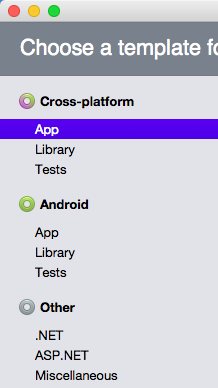
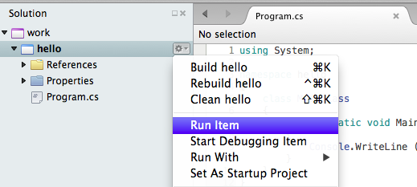
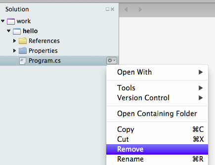
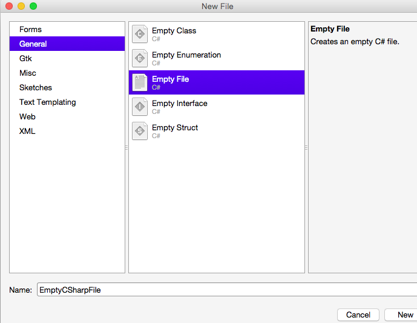

2.2. Lab: Editing, Compiling, and Running with Xamarin Studio¶
This first lab is aimed at taking you through the end-to-end process of writing and running a basic computer program with the Xamarin Studio environment. As with all things in life, we will learn in this lab that becoming a programmer requires you to learn a number of other things along the way.
In software development/engineering parlance, we typically describe a scenario as a workflow, which can be thought of as a series of steps that are possibly repeated. The workflow of programming can loosely be defined as follows:
- Use a text editor to write your source code (human readable).
- Compile your code using the Software Development Kit (SDK) into object code.
- Link your object code to create an executable. (There are other kinds of results to produce, but we will start with the idea of an executable program to keep things simple.) The default is to have an executable program created with compilation, automatically.
- Run your program. Even for the most seasoned developers, your program may not work entirely right the first time, so you may end up repeating these steps (debugging).
These steps can all be done with different tools. Many find it simpler to have an integrated tool, like Xamarin Studio, that does them all in the same place, and automates the steps that do not need human interaction!
If you are doing this on your own machine, make sure you have Mono and Xamarin Studio installed as in Development Tools.
Other tools are available, like the development environment Visual Studio (from Microsoft, focused on Windows).
Understanding the lower level tools that accomplish each step is important, but we defer a discussion to get you going with Xamarin Studio.
2.2.1. Goals¶
Our primary goal to create and understand an Xamarin Studio setup that you can use to do all of the remaining homework assignments and labs for this course.
2.2.2. Steps¶
Xamarin Studio files and interactions are organized hierarchically. At a low level are individual C# source code files. One, or possibly more, are used for a particular project. Multiple projects are gathered together under a single solution. Xamarin Studio deals with one solution at a time, though you can separately create multiple solutions. The simplest thing is to create a single solution for this course, and put each of the projects that you create in that one solution. You can keep adding onto previous efforts without having to start over with a new solution each time.
We start by creating a solution with a project in it. The images are from a Mac. Windows versions should be similar.
Open Xamarin Studio, in the appropriate way for an application in your operating system. It should be in the Start menu for Windows. Using Spotlight is quick on a Mac.
You get a Welcome screen. Toward the upper left corner is a link for New Solution. Click on it. Alternately you can follow the path through the menus: File -> New -> Solution...

You should get a popup New Project Window, with a banner. “Choose a template for your new project”. It may initially show the wrong template choice, like in the left column shown here:
Make sure the template selection gets set to .NET (under Other) as in:

The center part of the screen then shows further choices appropriate to a .NET project. Make sure Console Project is selected, and the language shown in the highlighted line should be set to C#.
Then click Next.
The banner on the next form is “Configure your new project”. The image shows the initial state for the author:

Follow the order below to modify the form. Later parts may not be visible until you do the previous parts. The image shows the final form as filled out by Dr. Harrington.

- Enter hello in the Project Name field, for the name of the project.
- If you want to keep all your work together, we suggest that you change the name of the solution from the copied “hello” and enter any name you like: We recommend work, which will make sense for all your work for the course.
- On your computer the Location field should start off showing a Projects folder under your home folder, (not the author’s home folder as in the image). You can leave it as is or change it if you like.
- Make sure Create a project within the solution directory is checked in the box under the Location.
- You may skip version control for now, though it is very handy.
- After the three fields are filled in, the Create button in the lower right should become active. After checking your entires, click on Create.
You now have created a solution in Xamarin Studio, with one project inside it. Later we can add further projects to this solution.
Look at the Xamarin Studio window that appears. It should have two main sub-windows or “Pads” as Xamarin Studio calls them. A narrow one on the left is the Solution Pad, containing a hierarchical view of the solution. If you somehow close a pad, you can recover it going to the main Xamarin menu: View => Pads => Solution.
In the Solution Pad you should see your solution name at the top and the hello project under that. Folders have a little triangle shown to their left. You can click on the triangle. A triangle pointing down means the inside of the folder is displayed. A triangle pointing to the right means the contents are not being displayed. Listed under hello are References, Packages and Properties, that we will ignore for now. Below them is the line for the automatically generated sample code file Program.cs. The file should also appear in the Edit Pad to the right.

Program.cs should be selected in the Solution Pad, as shown above. Change the selection by clicking on hello. At the right end of the highlighted hello entry you should see an icon with a small gear and a triangle. Click on it to get the context sensitive popup window. When selected, most entries in the Solution Pad should show this icon, allowing you to open its context sensitive menu.
Bring up the context menu on the hello project in the Solution Pad. Select Run Item.
Here Xamarin Studio combines several steps: saving the file, compiling it into an executable program, and starting running it if compilation succeeded. With the canned file it should succeed! You see a Console window something like

Here you see the output of this simple program. On Windows you can follow the instructions and press the space or Enter key.
Note
This console window must be closed before you can run a program again. If you go to run a program and the Run Item line is grayed out, look for the unclosed terminal window you still have!
On Microsoft Windows, pressing spacebar or Enter kills the window. On a Mac only, this makes the window gets two more lines, but still be visible:

You have to actively close the Mac terminal window by clicking the red window closing button, or using the keyboard, with Command-W. You can either do that now, or replace the previous spacebar/Enter step with this action.
This one time it is convenient to get the immediate practice of running this automatically generated program file,
Program.cs. Hereafter this file is an annoyance. The file name and contents are always the same, and not useful. You would need to redo the whole code for your own program. A general approach for all your projects is to delete this file and put in a file of your own:Make sure Program.cs is selected in the Solution Pad. You save a step by closing the Edit Pad for Program.cs, clicking on the X in the Program.cs tab at the top of the Edit Pad.
In the Solution Pad open the context sensitive menu for Program.cs, and select Remove.
You get another popup, with the wrong (rightmost) button selected, Remove From Project. Instead select the left button, Delete, as in the image below. Otherwise the file is left in the hello folder, but it is just not listed as being in the project. Each project is associated with a folder, but not everything in the folder may be cataloged by Xamarin as part of the project.

If you forgot to close the Edit Pad tab containing Program.cs earlier, you can still do it – just say not to save changes to the file when asked.
To get in code that you want, there are several approaches. The one we take now is to start from a completely new empty file: Pop up the context sensitive menu for the hello project. Select the submenu Add... and then New File....

In the popup New File Dialog Window, it is likely that the wrong kind of file is highlighted (likely Empty Class).
Click on Empty File instead. Change the Name field from EmptyCSharpFile to hello.cs. Always remember the ”.cs”. Click the New button.
This should add hello.cs to the hello project and open an editing window for hello.cs. The file should have no text.

If it does have text, delete this file, too, and go back to the previous step and be sure to select Empty File, not Empty Class.
Much like in most word processors type in (or paste) the following code. This is actually an equivalent Hello, World! program to the automatically generated one, but it is a bit shorter. It only introduces the syntax we actually need at the beginning, and will be discussing more shortly. The automatically generate line numbers are not a part of the text:
1 2 3 4 5 6 7 8 9
using System; class Hello { static void Main() { Console.WriteLine("Hello World!"); } }
This program is deliberately simple, so you can type it into the text editor quickly and become familiar with how to create, edit, and save a program. Here is how it looks pasted or typed into the editor pad:

You can run the project just as before. You should ge the same result, unless you made a typing error. In that case look for what does not match, fix it, and try again. Remember to close the execution Console Window.
Now try a bit of editing: Look at the program to see where output came from. Change what is printed and run it, but don’t eliminate the output console window for now (so you can show it off).
Now grab the instructor or teaching assistant so they can perform a quick inspection of your work and check it off (including the varied message printed).
{kind=link}
{kind=link}
{kind=link}
{kind=link}
Labs need to be completed to receive credit. If you are unable to make class on a lab day, please make sure that you complete the work and demonstrate it by the beginning of the next lab.
At this point, you have accomplished the major objective for this introductory lab: to create a Xamarin Studio project, and enter, compile, and run a C# program.
2.2.2.1. For further reinforcement¶
Can you make a new program variant print out two separate lines? This is possible with an added statement. It is also possible changing one statement, but not adding an additional statement.
Download and install Mono Software Development Kit and Xamarin Studio on your home computer or laptop.
You can now add further projects to your current solution. To add a new project in your solution, in the Solution Pad open the context sensitive menu for the whole solution (top line), select Add, and in the submenu select New project, and you go to the Project Template form. It should remember your last settings, but do check: Later we will sometimes want a Library instead of a Console project.
Complete the remaining parts in the same way as before, giving a new name for the project.